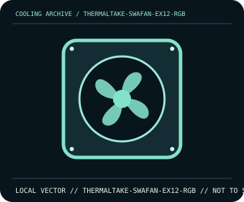

[ INDIVIDUAL COMPONENT // COOLING ]
Thermaltake SWAFAN EX12 RGB
120 mm magnetic-link RGB fan system supplied with interchangeable standard and reverse blades.

IDENTIFICATION: Confirm the complete model, revision, included mounting hardware, and host requirements against the manufacturer documentation before installation.
Manufacturer specifications
| Catalog subcategory | Case and radiator fans |
|---|---|
| Exact model | Thermaltake SWAFAN EX12 RGB |
| Frame and speed | 120 × 120 × 25 mm; PWM speed 500–2000 rpm. |
| Airflow | Up to 57.11 CFM with standard blades or 56.26 CFM with reverse blades; maxima depend on blade configuration. |
| Blade system | Removable, interchangeable standard/reverse blades for changing visible intake/exhaust orientation. |
| Compatibility | Use the SWAFAN EX magnetic-link cables/controller and the included kit wiring; verify exact single-fan or multi-pack contents before connecting to a motherboard. |
Compatibility and installation
Disconnect power before removing or swapping blades; use only the supplied SWAFAN EX components and orient blades for the required case airflow. Follow the included controller/cabling instructions and ensure the magnetic connection is fully seated before powering on.
- Disconnect system power before installation or rewiring, and follow the exact model manual.
- After assembly, confirm fan/pump operation and monitor temperatures before sustained workload.
Manufacturer source
- Thermaltake — SWAFAN EX12 RGB 3-fan pack product specificationsManufacturer product documentation; check the current model revision, package contents, and local socket kit before purchase or installation.
This static catalog entry is an identification aid, not a compatibility guarantee; fit and ratings can vary by revision, mounting kit, and host configuration.